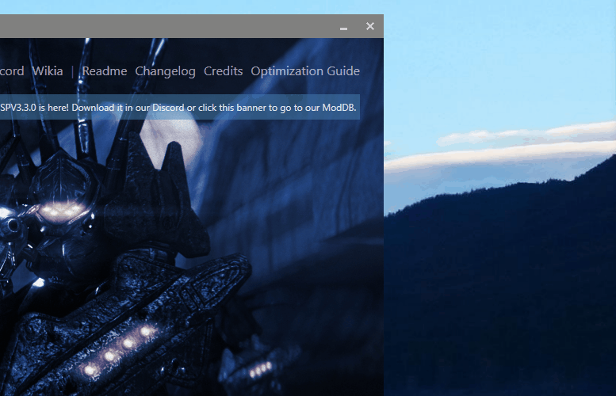
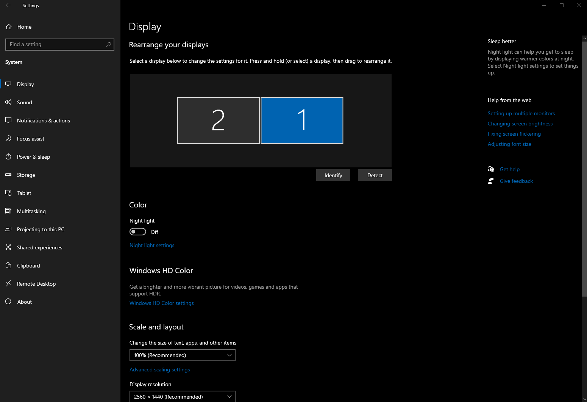
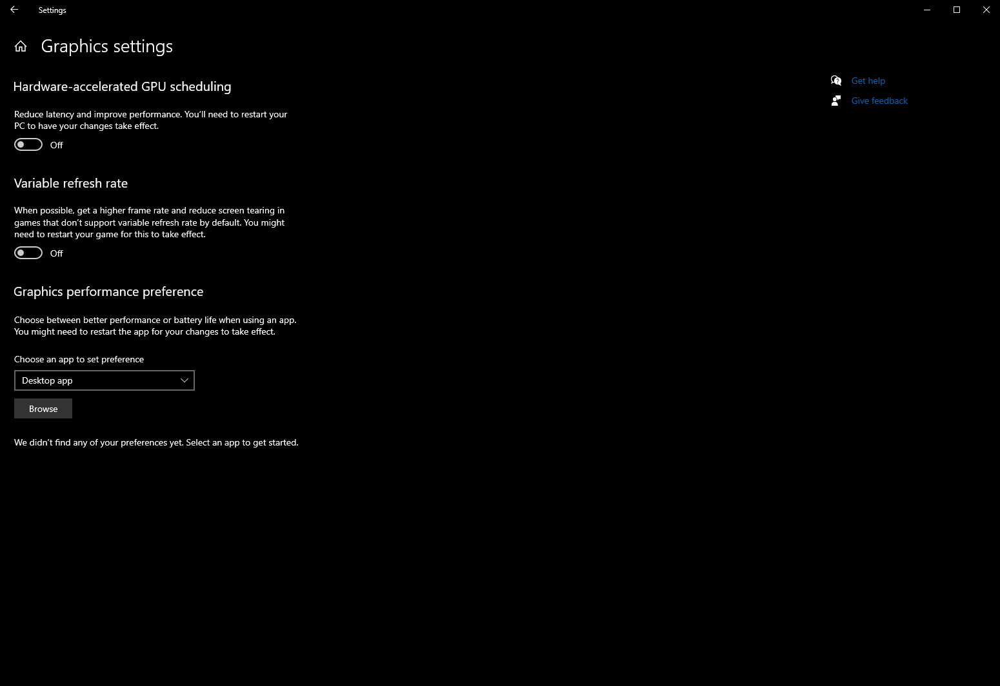
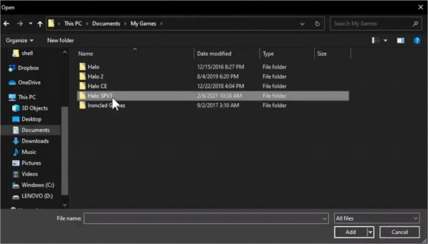
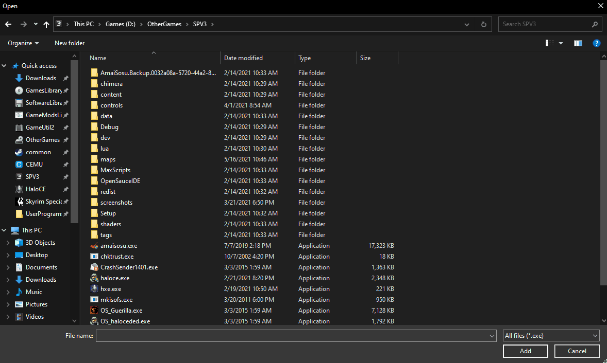
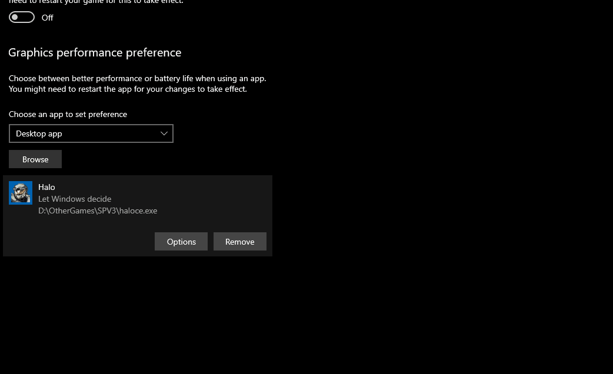
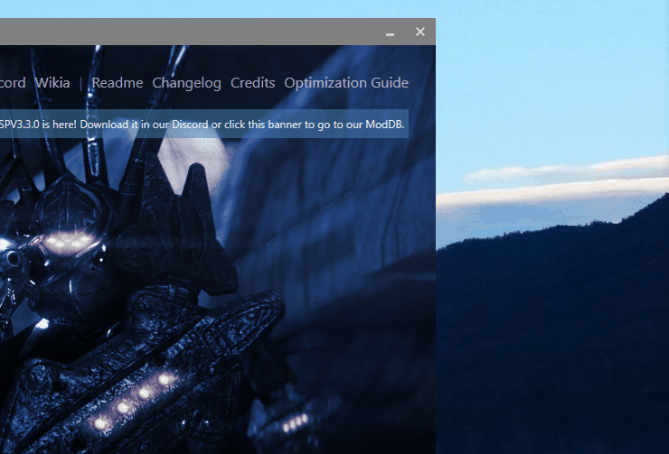

INSERT LICENSE HERE e.g. "GNU GPLv3"
Fox-Ott
2021
"Please follow closely..."
"Say what?!"
Singleplayer Version 3, better known as SPV3, is a sophisticated, large-scale mod of Halo: Custom Edition that mainly features a revamped version of Halo: Combat Evolved 's campaign, including terminals, new weapons, vehicles and enemies, additional sections of levels, vastly improved graphics and more. The mod was first released on the 25th of June 2016 and was created by the SPV3 Dev Team, headed by Masterz1337, a group of modders who have developed several other Halo: Custom Edition mods in the past. Halo: SPV3 is only available on PC and is not endorsed or supported in any way by 343 Industries or Microsoft.
The multiplayer code from Halo: Combat Evolved has been completely stripped from the game to create memory capacity for all of SPV3 's additions and changes. This means that any kind of multiplayer, including co-op Campaign, can never work with the mod. It is purely a single player experience in every way, shape and form, hence the name Singleplayer Version 3.
If SPV3 would be your first time playing Halo: Combat Evolved 's campaign, it is highly recommended you play at least the original Halo: Combat Evolved first, either on Halo: Combat Evolved (PC, 2003)/Custom Edition (PC, 2004) or Halo: The Master Chief Collection (PC/Xbox One & Series consoles). Or even an original Xbox if you have one!
The Domain awaits...
Halo: SPV3 Wiki . Loaded with all the resources you'll need to fight the Covenant.
Halo: SPV3 Reddit Page . You will find no salvation... But you can try.
SPV3 /MCC Projects Hub Discord Chat . A Discord chat server for Halo: SPV3 and other projects. The best place to ask questions, get help with SPV3, or just chat about Halo stuff.
SPV3 3.3.0 Mod Download from MediaFire
SPV3 3.3.0 Mod Download from Mod DB
Most buttons below open files in this tab. Click your brower's "Back" button to return to this manual.
Video button links work best when opening the file in VLC .
The Mantle of Responsibility is a heavy burden to shoulder.
NOTE : Due to the nature of SPV3, it's hard to nail down exactly what a solid set of minimum system requirements should be. The original Halo: Combat Evolved/Custom Edition PC releases can run on a potato chip by today's standards, but SPV3 uses higher-resolution textures, models with larger triangle counts, lots of extra game back-end scripting and a hefty post-processing system for extra visual flair. That said, unless specified, the following requirements info is more a set of guidelines than hard and fast "it won't work" rules.
Optimization of visual settings is covered later in this guide.
Suggested Minimum Requirements below assumes a game display resolution of 1280×720 pixels (720p) and a 60Hz refresh rate (60 frames per second).
"Even Cortana can't maintain 1080p60fps throughout SPV3—there's nothing we can do about it either." -nToss, SPV3 Launcher/Installer Dev
Operating System: Windows XP/Vista/7/8/8.1/10/11
Processor: Intel Core i3-3xxx and up or equivalent
Memory: 8GB RAM
Graphics: NVIDIA GeForce GTX 750 and up or equivalent
Storage (Download) : 4.5GB 1
Storage (Uncompressed) : 5GB 1
Storage (Required Extraction Space on C:) : 15GB 2
Storage (Final Install) : 15GB
1 = Can be deleted after use.
2 = Hard requirement. Files will be removed by Windows during normal use.
Just a few other things to check off the list...
> You own a legitimate CD key for the original Halo: Combat Evolved / Custom Edition PC release from 2003/2004. 3|4
------- Or -------
> You own Halo: Combat Evolved Anniversary on Halo: The Master Chief Collection (PC) through Steam. 5|6
------- Or -------
> You own Halo: Combat Evolved Anniversary on Halo: The Master Chief Collection (PC) through the Microsoft Store. 6
------- Or -------
> You are a Game Pass (PC) subscriber and have Halo: Combat Evolved Anniversary on Halo: The Master Chief Collection (PC) through that service. 6
3 = If you're a user with an old Halo: Combat Evolved/Custom Edition CD key, you can either install Custom Edition before SPV3 to meet the key requirement, or SPV3 will give you the option to install Custom Edition during setup.
4 = If you installed Halo: Custom Edition previously on your PC and Windows hasn't been refreshed/wiped, there's a chance that the CD key is still saved in your Windows Registry. If so, SPV3 's installer will automatically detect it and select that method of activation.
(You could install the regular Halo: Combat Evolved PC release—sometimes known as "Retail"—ahead of time instead of Custom Edition, but all you'd be doing is adding an extra step to do later when you go to activate SPV3. Probably best to stick with Custom Edition.)
5 = Steam users, your install of Halo: The Master Chief Collection may need to be on the same drive as Steam's EXE. If need be you can move Halo: The Master Chief Collection's folder to the main Steam folder, install Halo: SPV3, then move Master Chief Collection back to the previous location after activating SPV3.
6 = If you're a Steam/Microsoft Store/Game Pass user, ensure that your Halo: Combat Evolved Anniversary content is installed in Halo: The Master Chief Collection's settings.
"Fourth floor: Tools, Guns, Keys to Super Weapons"
content
A hyper-lethal vector.
Hold up there, flawless cowboy! Thought you were done after the last section, right? Not quite, and this one's important, so please keep on reading!
Before you start playing SPV3, you may need to alter some Windows settings to get good performance. You see, Windows may automatically think SPV3/Halo: CE is a mobile application, and not a game because it is so old. Yes, we know that’s dumb. Because it thinks it is a mobile app, Windows can potentially default your computer to run the game with as least power as possible, or even default the game to integrated graphics instead of your dedicated graphics card! Not fun! Your frame rates will be terrible and things will be choppy. So, we’ll show you how to fix that!
Probably the most simple way to do it.
Step 1: Start by right-clicking an empty space on your Desktop, then select Display settings in the menu that comes up.

Step 2: Scroll down and select Graphics settings at the bottom.

Step 3: In the Graphics settings window near the bottom, under Graphics performance preference, please ensure that Desktop app is selected dropdown menu, then click on the Browse button.

Step 4: In the "Browse" window that came up, locate the SPV3 game folder. Unless you changed it during setup, the default location is /Documents/My Games/Halo SPV3.

SPV3 default location.
Step 5: Select haloce.exe in the Browse window and then click the Add button on the bottom-right.

Step 6: The Browse window should close and you should find yourself back on the Graphics settings window. At the bottom, under the Graphics performance preference section, you should see that SPV3 has been added as Halo. Click the Options button.
Step 7: A small Graphics preference window should appear. Select the High performance option and click the Save button.

And you’re done! That’s the most simple way to do it.
NVIDIA's Control Panel application is more complex than the Windows settings, but offers a wide array of options and features.
Step 1: Start by right-clicking an empty space on your Desktop, then select NVIDIA Control Panel in the menu that comes up.

AMD Radeon Settings content
AMD Catalyst Control Center content
content
"Please stop being human."
content
"Oracle, what is Halo's purpose?"
Q: "Can I play SPV3 co-op with friends?"
A: Singleplayer Version 3. Clean your visor and maybe give the "What is SPV3?" section another quick read.
Q: content
A: content